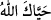

toplayanların yaptıkları gibi ilâhî kahra mâruz kalmamış olur.
“orada” cennetin en yüksek makamında melekler tarafından “hürmet ve selâmla
karşılanacaklardır” yâni melekler onları selâmlarlar. Onlara uzun yaşamaları,
âfetlerden selâmette olmaları için duâ ederler. Çünkü “__WORD__ ömrünün uzun olması için,
selâm da selâmet için bir duâdır.
el-Müfredât’ta der ki: “__WORD__ Allah sana uzun ömür versin (__WORD__) denilmesidir. “__WORD__nin aslı, “__WORD__ (canlı olmak, yaşamak)”tandır. Sonra her duâya “tehîyye”
denilmiştir. Çünkü bütün duâlar ya dünya veya ahîret için bir hayat yahut hayat sebebi
olmaktan hâriç değildir.
“__WORD__ ise zâhir ve bâtın âfetlerden arınmak/uzak olmaktır. Hakîkî selâmet
ancak cennettedir. Çünkü orada yokluğu olmayan bir bakâ, fakirliği olmayan bir
zenginlik, zilleti olmayan bir izzet ve hastalığı olmayan bir sıhhat ve âfiyet vardır.
Bazıları der ki: “İkisi arasındaki fark şudur: Selâm, âriflerin Allah’a vâsıl olma
konusunda ayrılıktan selâmette olmaları demektir. “__WORD__ ise onların ruh ve bedenlerine
ezelî olan Hakk’ın hayat sıfatının tecellî etmesi, böylece ebedî bir hayatla
yaşamalarıdır.”
Bazıları demiştir ki: “Onlar orada yokluktan tamamen kurtulacakları bir selâm ve
Allah’ın hayâtı ile yaşayacakları bir tahıyye ile karşılanırlar. Nitekim İbrahim (a.s) da
Allah Teâlâ’nın “Ey ateş, İbrahim’e serin ve esenlik ol” (el-Enbiyâ, 21/69)
hitâbındaki “selâm” ile soğuğun şiddet ve âfetinden korunmuştu.”
Gönlü kırık olan benim sağlık ve selâmetim, senin selâmına bağlıdır
Eğer senin saâdet bahşeden selâmını alırsam, ne büyük mutluluk
76. Orada ebedî kalacaklardır. Orası ne güzel bir yerleşme ve ikâmet yeridir.
“Orada” ölmeden ve cennetin o en yüksek makamından çıkarılmadan “ebedî
kalacaklardır. Orası” cennetin en yüksek makamı, yerleşme ve ikâmet yeri olması
bakımından “ne güzel bir yerleşme ve ikâmet yeridir.”
Bu âyet mânâ yönünden “Orası cidden ne kötü bir yerleşme ve ikâmet yeridir!” (el-
Furkân, 25/66) âyetinin karşılığıdır.
Şu halde akıllı kimseye gereken; yukarıda anlatılan fazîletli ve güzel görülen
amellerle cennetin bu en yüksek makamı için hazırlık yapmak, sadece temenni ve
emellere kapılmamaktır. Çünkü boş temennî şüphesiz ölüm gibidir, insana bir fayda
sağlamaz.
Gayret ve yorulma miktarınca yükseklikler kazanılır.